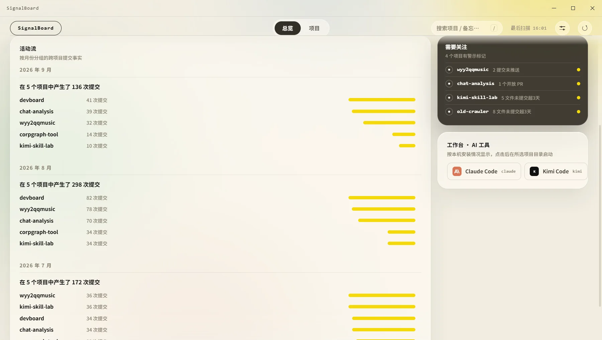
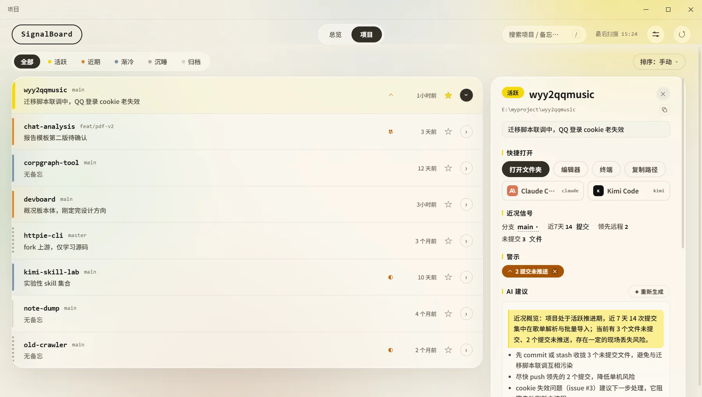
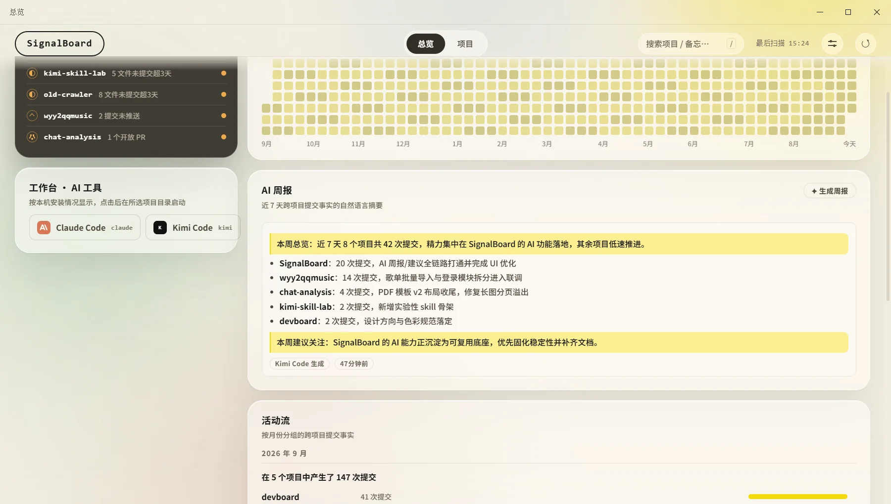

功能
近况信号全部自动提取——零维护，零填表。
总览：跨项目的事实全貌
- 全年提交热力图：所有项目提交按天求和，一年节奏一眼看全
- 按月活动流：每月哪些项目在动、动了多少次，成条对比
- 「需要关注」首屏主角：深色锚点卡按严重度排序（超期未提交 > 未推送 > 开放 PR），Top 5 直达详情；零警示时给你「都在正轨上」
- AI 周报：每周提交节奏一段人话总结，打开即有，当天缓存复用
- 工作台：本机装了的 AI 命令行工具自动现身，一键在项目目录启动

项目页：行式列表，按温度分带
- 五档活跃分带：活跃 / 近期 / 渐冷 / 沉睡 / 归档，按最后动静自动划分——提交、AI 会话、未保存改动都算「动静」
- 行内即见分支、备忘、警示与最近动静，分带色条沿行左缘标示
- 拖拽排序与图钉：手动位序持久化，图钉项目永远置顶
- 搜索按名称与备忘过滤，自动补全，/ 聚焦、回车直达
详情面板：一个项目的全部近况
- README 摘要、近期提交、未提交文件，点开即回到上下文
- AI 建议：按项目 git 信号给 2–3 条下一步行动，随项目缓存
- 备忘钉在项目最显眼处，防止决策漂移
- 快捷打开：文件夹 / 编辑器 / 终端 / AI 工具，一键到位
- 警示消音：暂时静音，底层状态变了自动复出

AI 能力：用你本机已装的 AI 工具
- AI 周报：近 7 天跨项目事实一段总结，加一句「本周建议关注」，打开即有
- AI 建议：按项目 git 信号给下一步行动，随 HEAD 缓存
- 自然语言筛选：直接打「最近一周有动静的」，AI 解析成筛选条件
调用你本机已登录的 Agent CLI（claude / codex / kimi / grok 或自定义命令）， 只发统计事实与提交文本，不上传代码；可整体关闭，未安装时入口自动隐藏。
